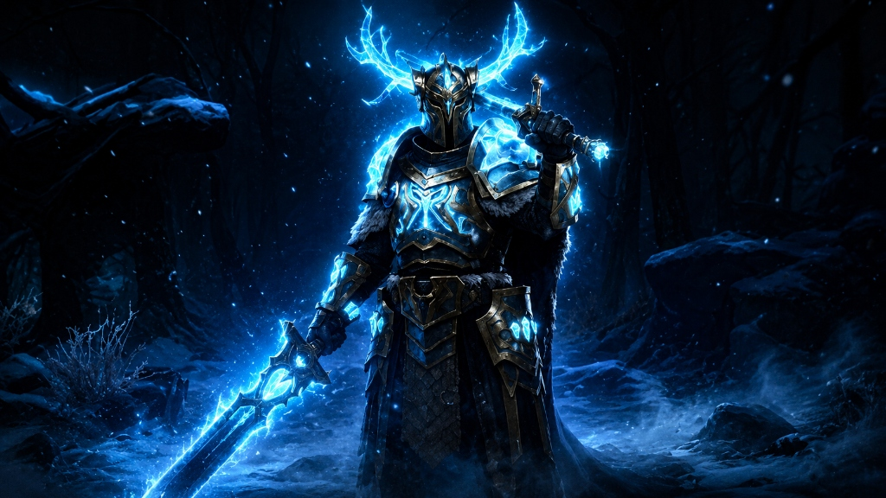
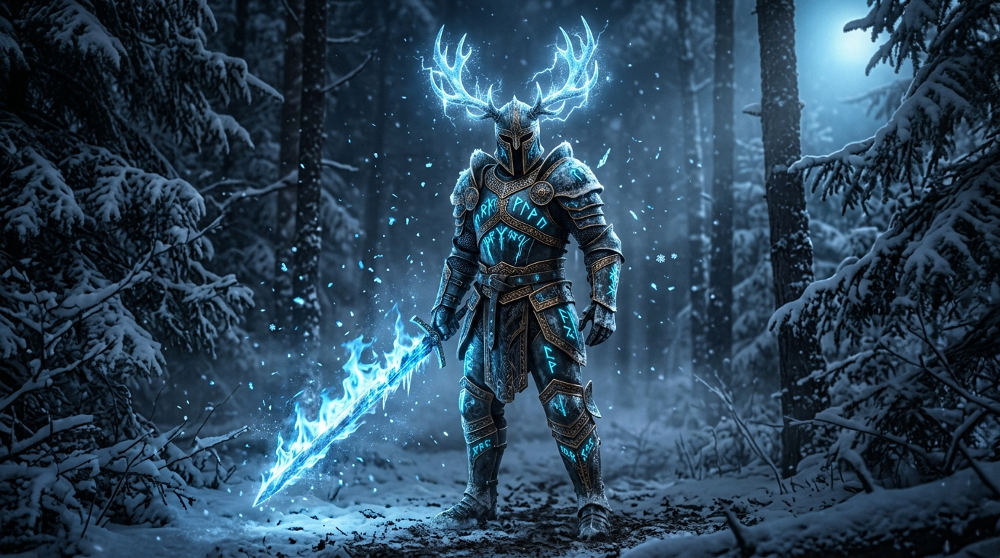
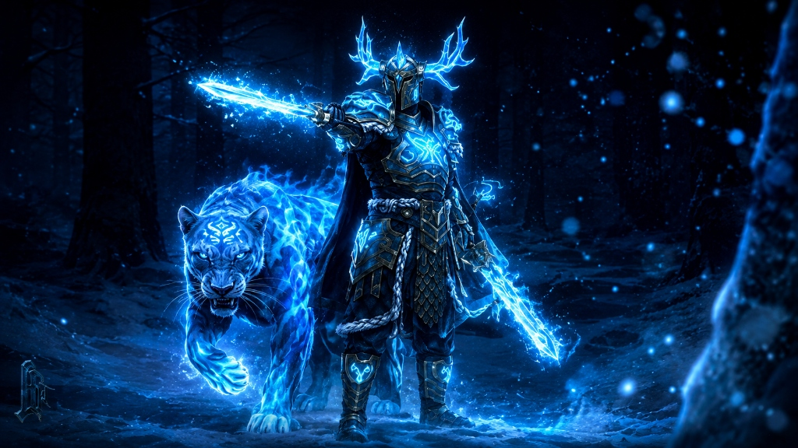
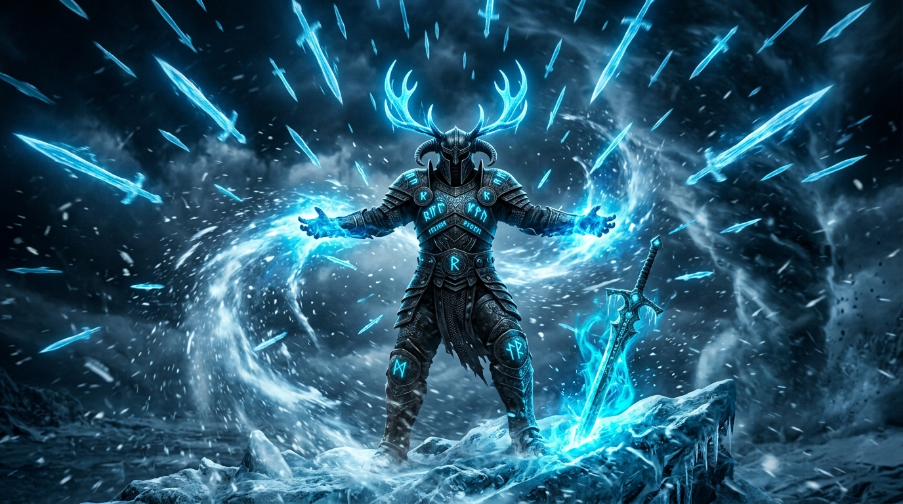
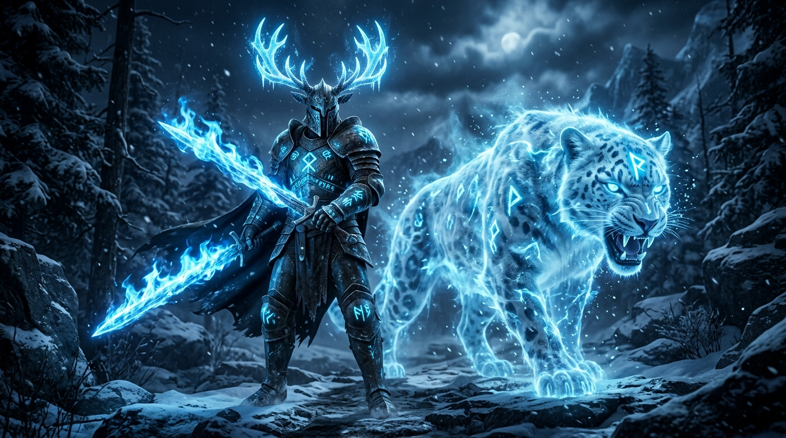
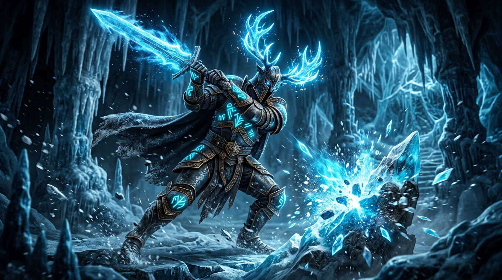
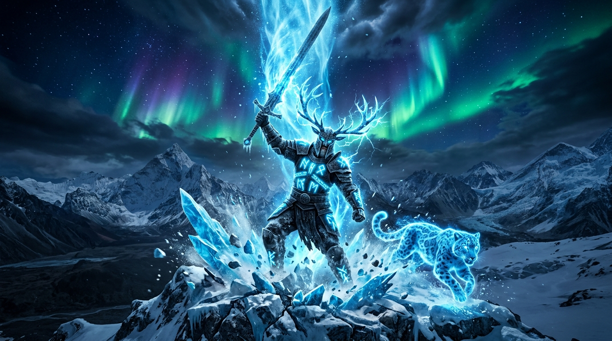
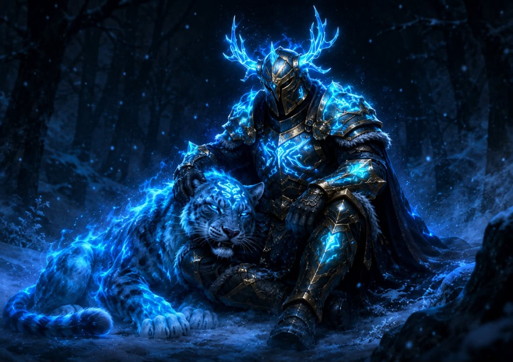

The Celestial Konung is one of the most devastating legendary sets in Shadow Fight 3. Forged in the heart of an eternal blizzard, this armor channels the raw power of arctic frost through ancient Nordic runes.
The wearer commands ice energy — summoning blizzards of razor-sharp ice swords from the sky, detonating frost runes embedded in enemies, and calling forth a spectral Snow Leopard to deliver the Konung's Verdict.
With 6 upgrade tiers, each level transforms the warrior into an increasingly unstoppable force of frozen destruction.


You use ice energy. You gain energy when the ice swords summoned by your abilities hit an opponent. You do not gain energy from other sources. You spend ice energy to use the Konung's Verdict ability.
You have 4 ice moves available. Ice moves do not consume energy.
You create a Blizzard for 10 sec, during which ice swords fall from the sky. When an ice sword hits an opponent, it deals 5% weapon damage and applies a Frost Rune to them for 10 sec. When it hits the ground, an ice sword explodes, pushing back the opponent and dealing 3% weapon damage.
You summon a leopard that slams the ground with its paws, dealing 10% shadow damage and knocking down the opponent.
For 10 sec, your weapon becomes icy: your weapon attack damage is increased by 40%, your attacks have a 35% chance to break through the enemy's block, and a 20% chance to freeze them.
You plunge two giant swords into the ground, preventing the enemy from moving far from you.
When you successfully hit an enemy with a weapon, you have a 50% chance to summon an ice sword that will attack the opponent after 0.5 sec, dealing 5% weapon damage and applying a Frost Rune to them for 10 sec. A new Rune refreshes the duration of those already applied. Each active Rune reduces the opponent's damage by 3%. Successfully hitting an opponent with an ice sword restores you 15% ice energy.
If the opponent has the maximum number of Runes active on them, the ice swords do not apply new ones to the opponent, but refresh the duration of the currently active ones.
Maximum number of Frost Runes active at the same time: 8
If your opponent has no Frost Runes applied, you throw an ice sword at them, dealing 5% weapon damage on hit and applying a Frost Rune to them.
If your opponent has at least one Frost Rune applied, you detonate them, dealing 5% shadow damage to the opponent for each Rune detonated and knocking them down.
Cooldown: 10 sec
You spend 25% of energy to summon a Snow Leopard that jumps on the opponent. On hit, the leopard absorbs all your energy and slams the opponent to the ground, dealing 35% shadow damage, then throws the opponent onto an ice spike, dealing an additional 30% shadow damage and automatically activating Rune Magic.


The duration of your ice moves Sharpest Ice, Polar Blizzard, and Konung's Challenge is increased by 5 sec.
All your ice moves are enhanced:
Every 4 Frost Rune applied automatically activates Leopard Leap.


You can now apply an unlimited amount of Frost Runes to the opponent.
Maximum damage reduction from all active Runes on the opponent: 60%.
When Rune Magic is activated at the end of the Konung's Verdict, an ice sword falls on the enemy from above, increasing damage by 300%.
Hold the hand attack button to perform a combo of three moves. The second move of the combo freezes the opponent on a successful hit.
The combo deals 120% weapon damage to the opponent and each attack in it has a 40% increased chance to summon an ice sword.
Each level of the Celestial Konung set builds upon the last, transforming the warrior from a skilled raider into an unstoppable frozen monarch.
Provides the raw foundation — a flat boost to weapon attack damage and defense, making every hit harder and every block sturdier before any abilities come into play.
The core of the entire set. Unlocks the ice energy system, all 4 ice moves (Polar Blizzard, Leopard Leap, Sharpest Ice, Konung's Challenge), the Ice Swords passive for constant Frost Rune pressure, Rune Magic for detonations, and Konung's Verdict — the devastating Snow Leopard finisher.
Amplifies your Blizzard uptime by increasing ice sword summon chance while inside it. Turns Polar Blizzard from a strong ability into a relentless barrage that stacks Frost Runes faster.
A massive empowerment tier. Ice Mead extends every ice move by 5 seconds and enhances all of them — double Blizzard swords, faster Leopard Leap, stronger Sharpest Ice, and Konung's Challenge now creates Slicing Blizzards. Playing with Runes auto-triggers Leopard Leap every 4 Frost Runes, creating chain combos.
Extends Frost Rune duration by 2 seconds and adds 2 extra ice swords to Rune Magic. Longer rune uptime means more stacks, more damage reduction on the opponent, and more detonation damage when you trigger Rune Magic.
Removes the Frost Rune cap entirely — unlimited rune stacking with up to 60% damage reduction. Death Verdict makes the Konung's Verdict finisher deal 300% bonus damage when Rune Magic triggers at the end. Ice Execution adds a freezing combo that deals 120% weapon damage with massively increased ice sword summon chance.

The Celestial Konung set heavily relies on shadow damage. Konung's Verdict, Rune Magic detonations, and Leopard Leap all deal shadow damage, making perks that amplify or synergize with shadow output essential. The following perk loadout maximizes the set's destructive potential.
Your shadow abilities inflict Bleeding on the opponent, dealing continuous damage equal to a percentage of your shadow abilities' damage over time.
Synergy: Since Konung's Verdict and Leopard Leap both deal shadow damage, Shadow Blades adds a bleed on top of every shadow hit — stacking sustained damage alongside your burst.
When you lose a certain amount of your maximum health, you have a chance to restore a percentage of your health. At higher levels, the activation threshold drops and the heal percentage increases.
Synergy: Essential for survivability. Several weapon perks in this build cost health to activate, so Field Medicine offsets that self-damage and keeps the Konung in the fight longer.
Increases your critical hit damage with each successive critical hit you land. The bonus stacks the more crits you score, but comes at the cost of reduced defense.
Synergy: The Konung's constant ice sword barrage gives you many opportunities to land critical hits. With Sharpest Ice active (40% damage boost + freeze chance), critical hits become devastating — Himmelstein's Power turns them into fight-ending bursts.
Provides a significant damage boost against opponents whose health has dropped below a certain threshold. The lower the enemy's health, the more damage you deal.
Synergy: Once the Konung's Frost Rune pressure and ice sword barrage wear the opponent down, Predator kicks in to close the fight. Pairs perfectly with Rune Magic detonation chains for a finishing blow.
When you lose health due to your equipment's set ability effects or other perks (such as Berserk), you have a 50-80% chance to deal shadow damage to the opponent equal to 80-165% of the health you lost.
Synergy: A game-changer for this build. When Berserk or Shadow Berserk cost you health, Price of Victory converts that self-damage into devastating shadow damage dealt to the enemy — turning every risk into a reward.
Provides a chance to stun the opponent for approximately 3 seconds upon landing a successful hit. The stun completely immobilizes the enemy.
Synergy: A stunned opponent is a sitting target for the Konung's full combo — activate Sharpest Ice, chain into Ice Execution, or unleash Konung's Verdict while they cannot dodge or block.
Gives a chance to deal massively increased damage with a weapon hit, at the cost of losing a portion of your own health. The damage multiplier is significant enough to turn a single hit into a devastating blow.
Synergy: The health cost is the point — Price of Victory converts your self-damage into shadow damage dealt to the enemy, and Field Medicine heals you back. Berserk becomes a pure damage multiplier with no real downside.
Provides a chance to deal bonus shadow damage during a shadow move, at the cost of a percentage of your health. Triggers on shadow abilities and shadow energy attacks.
Synergy: Since the Konung set relies on shadow damage (Leopard Leap, Konung's Verdict, Rune Magic detonation), Shadow Berserk amplifies every single shadow hit. Combined with Price of Victory, the health cost becomes additional shadow damage dealt to the enemy.
At maximum power, the Celestial Konung becomes an unstoppable avatar of winter itself. Infinite frost runes, devastating ice executions, and the eternal Snow Leopard companion make this set the pinnacle of Shadow Fight 3 mastery.